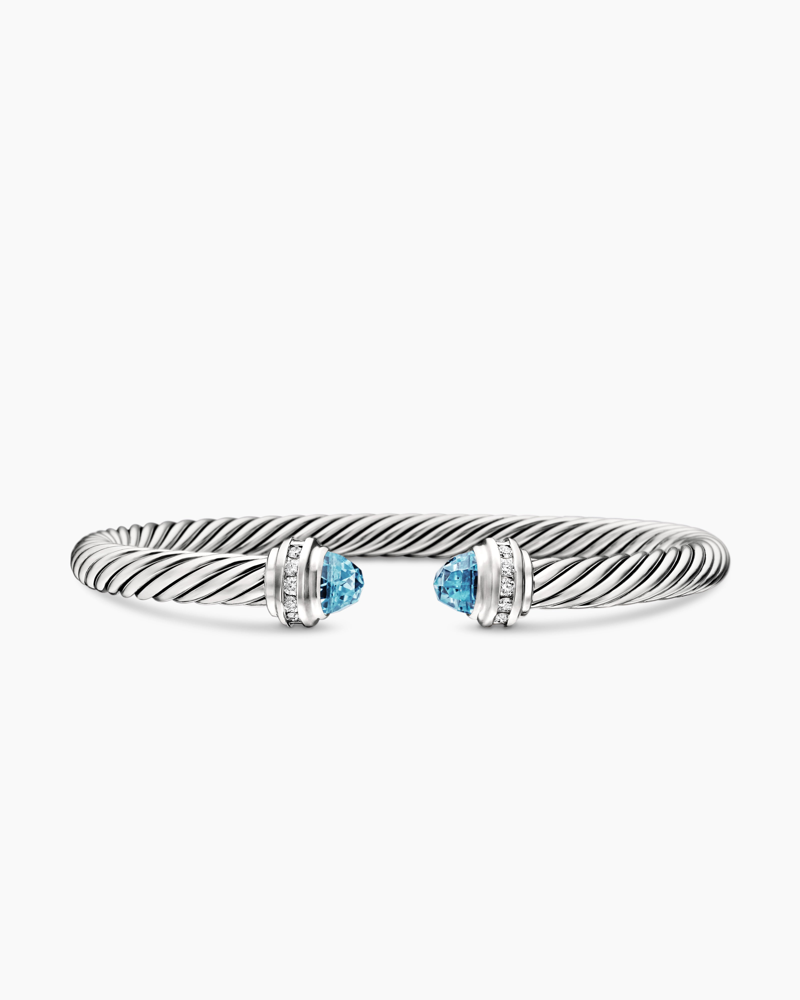
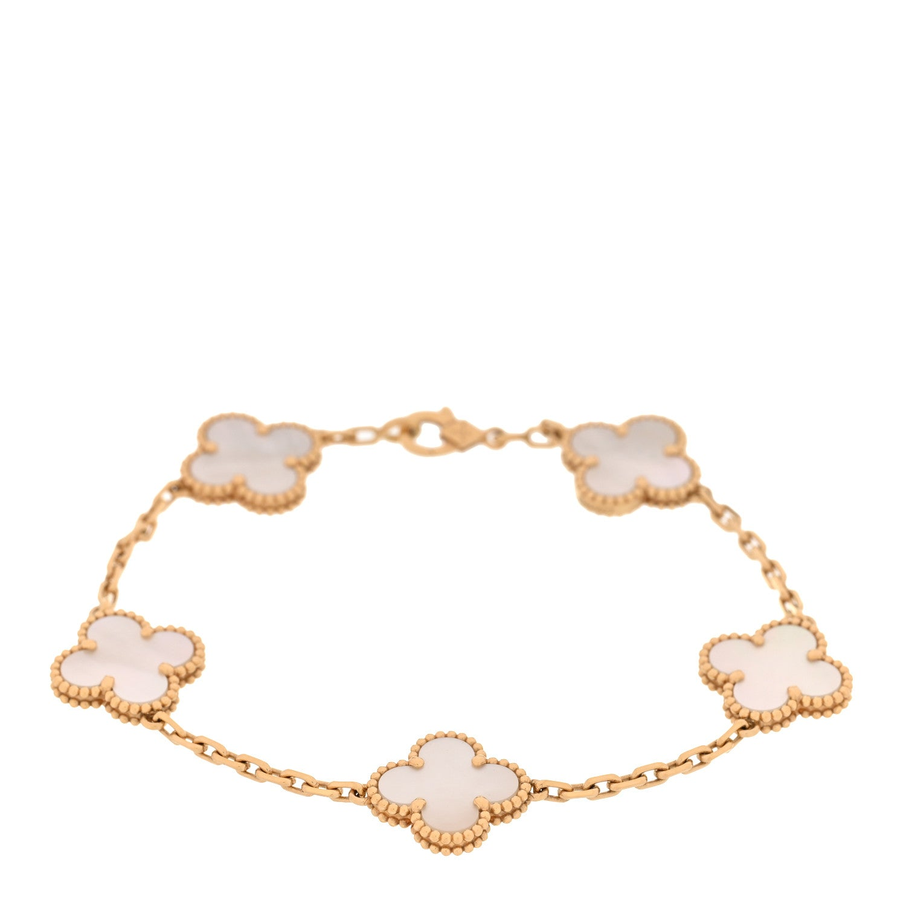
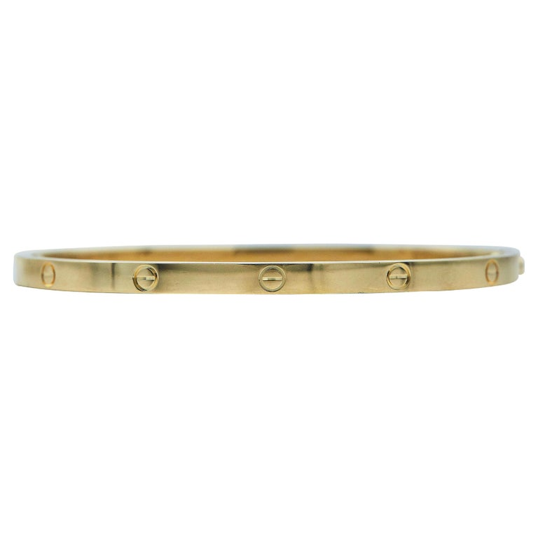

2026 / Most wanted
2026 / Most wantedBoucheron
Quatre Classique Ring XS — Three Golds and Brown PVD
The smallest Quatre Classique ring turns contrast into a precise line around the finger.
US$5,150Explore ↗
Official US listed reference · snapshot reviewed 20 Oct 20262022—2026 / THE MUSELUX ARCHIVE
Five years of rings, bracelets and earrings.
Explore four popular jewelry pieces and two limited or special editions from each year.
Each year's four popular picks form an editorial shortlist based on dated demand reports and editorial coverage. Source ranks refer to their stated quarter or period; the edit is not a universal annual sales ranking. A current photograph may show a later colour or material variant of a design family that was popular in the selected year; the pictured reference is identified on its detail page.
Edition labels distinguish numbered editions, explicit limited releases and seasonal capsules. A capsule label does not imply a fixed production quantity. Prices remain in USD, with current retail references, dated reported prices and any unavailable prices clearly identified. The 2026 edit covers evidence available by 19 October 2026.
2026 / FORM & CULTURE
Rings, earrings and bracelets balance geometric gold with tactile volume and vivid colour. This year-to-date selection pairs four fine-jewelry highlights with two clearly labelled collaboration capsules released during 2026.
2026 / Most wantedThe smallest Quatre Classique ring turns contrast into a precise line around the finger.
 2026 / Most wanted
2026 / Most wantedThree rounded bands give this Together ring a generous, architectural silhouette.
 2026 / Most wanted
2026 / Most wantedA single elongated gauge link gives each HardWear earring an immediate outline.
 2026 / Most wanted
2026 / Most wantedThe micro-link HardWear bracelet translates a bold chain vocabulary into a finer rhythm at the wrist.
Numbered editions, limited releases and collaboration capsules are labelled individually.
 2026 / 2026 collaboration capsule
2026 / 2026 collaboration capsuleThe open shape of this bangle sets a blue pear-shaped stone opposite a small pastel dragonfly.
 2026 / 2026 collaboration capsule
2026 / 2026 collaboration capsuleThese dragonflies hang beneath small pavé hoops, letting the wings move just below the ear.
2025 / FORM & CULTURE
Clic Clac H, Classic Cable, five-motif Alhambra and the small LOVE bracelet form a 2025 shortlist supported by the year’s platform-specific shopping report. Superflat earrings and a crystal-heart bracelet add artist and celebrity collaboration capsules, with source dates and individual edition labels preserved.
 2025 / Most wanted
2025 / Most wantedWhite enamel gives this wide Clic Clac H bracelet a crisp, almost graphic presence.

2025 / Most wantedDavid Yurman’s Cable bracelet makes the twist itself the main event.

2025 / Most wantedFive clovers turn the Alhambra motif into a rhythm around the wrist.

2025 / Most wantedThe small LOVE bracelet compresses the collection’s recognizable screw motif into a slender band.
Numbered editions, limited releases and collaboration capsules are labelled individually.
 2025 / 2025 artist collaboration capsule
2025 / 2025 artist collaboration capsuleThe Superflat earrings use asymmetry to keep the collaboration’s imagery lively.
 2025 / 2025 celebrity collaboration capsule
2025 / 2025 celebrity collaboration capsuleRepeated hearts give this bracelet a more expressive surface than a plain tennis line.
2024 / FORM & CULTURE
Trinity’s centenary, the HardWear link, Serpenti Viper’s scale pattern and Coco Crush’s quilted surface anchor the 2024 edit. A Dratini ring and Dragonair earrings from Fendi’s January capsule bring a playful contrast. Design-family evidence is kept separate from the exact size, material and price shown.
 2024 / Most wanted
2024 / Most wantedTrinity makes color and movement inseparable.
 2024 / Most wanted
2024 / Most wantedA chain bracelet becomes especially engaging when its individual links have a clear identity.
 2024 / Most wanted
2024 / Most wantedSerpenti Viper gives a familiar animal motif a disciplined, geometric rhythm.
 2024 / Most wanted
2024 / Most wantedThe mini Coco Crush ring offers a close reading of the collection’s surface.
Numbered editions, limited releases and collaboration capsules are labelled individually.
 2024 / 2024 collaboration capsule
2024 / 2024 collaboration capsuleDratini curls around the finger as a polished gold-tone ring.
 2024 / 2024 collaboration capsule
2024 / 2024 collaboration capsuleDragonair becomes a pair of sculptural gold-tone hoops in this Fendi collaboration.
2023 / FORM & CULTURE
Recognizable gold silhouettes meet new campaign energy, with selected rings and bracelets beside a dated artist collaboration. Each price belongs to the precise reference shown.
 2023 / Most wanted
2023 / Most wantedThe mini Coco Crush ring offers a close reading of the collection’s surface.
 2023 / Most wanted
2023 / Most wantedA narrow gold band carries a surprisingly strong graphic rhythm when its surface is punctuated by the LOVE screw motif.
 2023 / Most wanted
2023 / Most wantedA single bent nail becomes an open, sweeping line around the wrist.
 2023 / Most wanted
2023 / Most wantedWithout gemstones, the Lock bangle depends entirely on the meeting of two rounded sections.
Numbered editions, limited releases and collaboration capsules are labelled individually.
 2023 / Collaboration capsule · ROSÉ2023
2023 / Collaboration capsule · ROSÉ2023Pink sapphires trace one part of this rose-gold bangle, leaving the broader polished surfaces to define its overall outline.
 2023 / Artist capsule · Yayoi K usama 2023
2023 / Artist capsule · Yayoi K usama 2023A slim Monogram loop becomes the quiet support for two small hanging forms: a bright pumpkin and the familiar LV initials.
2022 / FORM & CULTURE
Twisted silver, repeated links and distinctive gold outlines reflect a strong year for recognizable wristwear. The special editions range from fashion exchange to an artist-designed collectible ensemble.
 2022 / Most wanted
2022 / Most wantedA chain bracelet becomes especially engaging when its individual links have a clear identity.
 2022 / Most wanted
2022 / Most wantedA twisted silver body ends in two smooth gold domes, creating a simple conversation between texture and reflection.
 2022 / Most wanted
2022 / Most wantedThe classic LOVE bracelet builds its identity from an oval outline, flat gold surfaces and a repeated screw motif.
 2022 / Most wanted
2022 / Most wantedFive pale quatrefoils turn a fine yellow-gold chain into a repeating pattern around the wrist.
Numbered editions, limited releases and collaboration capsules are labelled individually.
 2022 / Seasonal collaboration · Fendace
2022 / Seasonal collaboration · FendaceOpen geometric sections turn the familiar hoop into a small architectural frame.
 2022 / Limited edition · 99 ensemble works
2022 / Limited edition · 99 ensemble worksA brightly set Lock bangle and an apparently eroded bronze padlock make a deliberately contrasting pair.
USD references are labelled by their price date and basis. Archive prices are not live offers; confirm current availability with the brand or the named source.